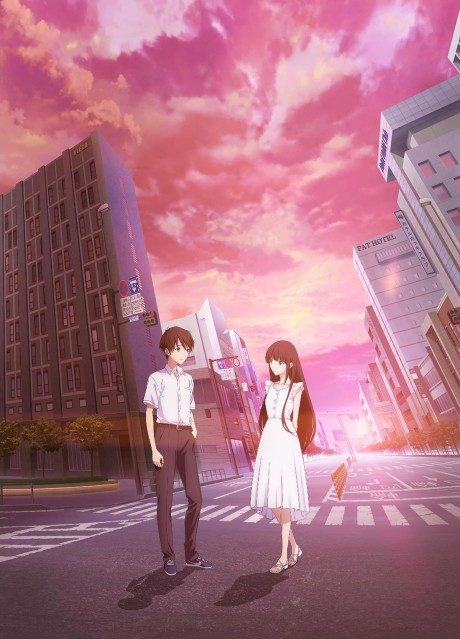

Anime2022 · Romance, Sci-Fi
To Me, The One Who Loved You
君を愛したひとりの僕へ
AniList7.3
Animeter—
Movie1 ep
MangaFilm
Is there a manga to continue?
StatusOriginal
An anime original, so there is no manga to pick up from.
Sources: AniList, MyAnimeList